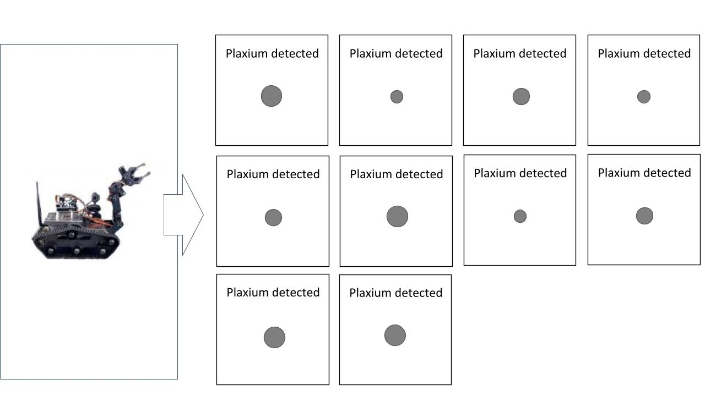
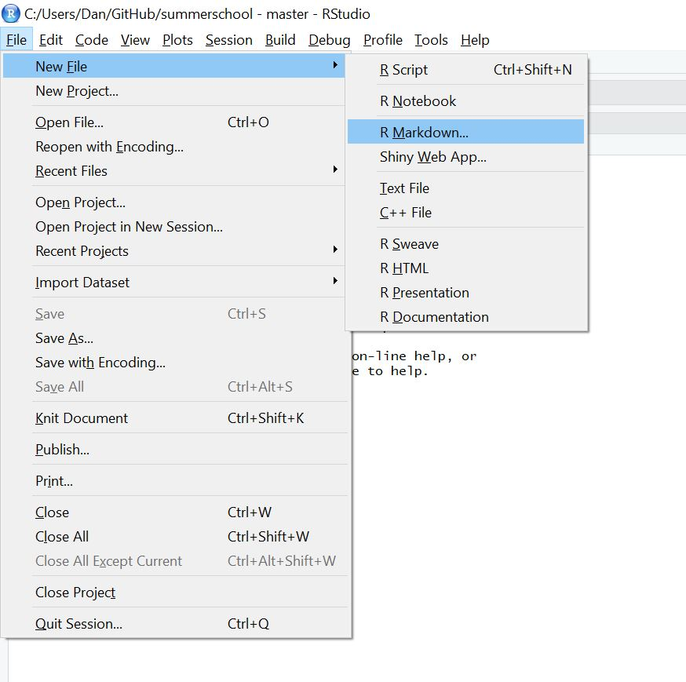

Data wrangling with dplyr
Danielle Navarro <i class="fab fa-twitter faa-float animated "></i> @djnavarro
https://djnavarro.github.io/chdss2018/
11 December 2018
class: split-two bg-main1
.column.bg-main1[.content.vmiddle.center[
Data wrangling
.pull.left[.pad1[
.orange[What?] Manipulate data
.orange[Why?] Because data are messy
.orange[How?] With tidyverse! (esp. dplyr)
]]
]]
.column.bg-main3[.content.vmiddle.center[

[@allison_horst](https://twitter.com/allison_horst)
]]
class: split-two bg-main1
.column.bg-main1[.content.vmiddle.center[
Tidyverse
install.packages("tidyverse")
library(tidyverse)]]
.column.bg-main3[.content.vmiddle.center[
]]
class: bg-main1 center middle hide-slide-number
.reveal-text.bg-main2[.pad1[ .font4[The “sampling frames” experiment]]]
class: bg-main1 center middle
Property sampling: the robot only detects plaxium spheres

class: bg-main1 center middle
Category sampling: the robot only tests small spheres

class: bg-main1 center middle
Small sample size: Elicit judgments after two observations

class: bg-main1 center middle
Medium sample size: Elicit judgments after six observations

class: bg-main1 center middle
Large sample size: Elicit judgments after twelve observations

class: bg-main1 center middle
Seven test items that vary in size: Smallest…

class: bg-main1 center middle
Seven test items that vary in size: Largest…
class: bg-main1 center middle hide-slide-number
.reveal-text.bg-main2[.pad1[ .font4[Getting started]]]
class: bg-main1
What do we need?
.pull.left[.pad1[.font2[
- General resources: https://djnavarro.github.io/chdss2018/
- The data: http://compcogscisydney.org/psyr/data/frames_ex2.csv
- Save data here: [your_project]/analysis/data/frames_ex2.csv
- R packages:
install.packages("tidyverse")
install.packages("skimr")
install.packages("lsr")]]]
class: split-40 bg-main1
.row.bg-main1[.content.vmiddle.center[
An R Markdown document!
.pull.left[.pad1[.font2[ - File > New File > R Markdown… - Save it: [your_project]/analysis/docs/analysis.Rmd]]]
]]
.row.bg-main3[.content.vmiddle.center[

]]] ]]
class: split-40 bg-main1
.column.bg-main1[.content.vmiddle.center[
Delete everything except the top bit
.pull.left[.pad1[.font2[ - At the top is the YAML header - Leave the knitr thing alone - This is the whole document…]]]
]]
.column.bg-main3[.content.vmiddle.center[
.pull.left[.pad1[.font2[
---
title: "Exploring the data"
author: "Danielle Navarro"
date: "4 December 2018"
output: html_document
---
```{r setup, include=FALSE}
knitr::opts_chunk$set(echo = TRUE)
```]]] ]]
class: split-40 bg-main1
.column.bg-main1[.content.vmiddle.center[
Start writing!
.pull.left[.pad1[.font2[ - Load packages in the first chunk - Write descriptions for humans! - Document, document, document]]]
]]
| .column.bg-main3[.content.vmiddle.center[ |
| .pull.left[.pad1[.font2[ |
| ```` ## Getting started |
| The first thing to do in our analysis is load the R packages that we’ll use to do the work: |
{r} library(here) library(tidyverse) library(skimr) |
| The next step is to load the data set itself. The data from the sampling frames experiment are stored in the “frames_ex2.csv” file: |
{r} loc <- here("analysis","data","frames_ex2.csv") frames <- read_csv(file = loc) ```` |
| ]]] ]] |
class: split-40 bg-main1
.column.bg-main1[.content.vmiddle.center[
Tidy the code chunk
.pull.left[.pad1[.font2[ - Note the output messages - Helpful the first time… - … but suppress if you like - Give it a name (like packageload)]]] ]] – .column.bg-main3[.content.vmiddle.center[ .pull.left[.pad1[.font2[
## Getting started
The first thing to do in our analysis is load the R
packages that we'll use to do the work:
```{r packageload, message=FALSE}
library(here)
library(tidyverse)
library(skimr)
```]]]
]]
class: split-40 bg-main1
.column.bg-main1[.content.vmiddle.center[
Tidy the code chunk
.pull.left[.pad1[.font2[ - Note the output messages - Helpful the first time… - … but suppress if you like - Give it a name (like packageload)
]]]
]]
.column.bg-main3[.content.vmiddle.center[

]]
class: split-40 bg-main1
.column.bg-main1[.content.vmiddle.center[
Import the data
.pull.left[.pad1[.font2[ - Verbal description - Specify the file location - Import data with read_csv()]]] ]]
| .column.bg-main3[.content.vmiddle.center[ .pull.left[.pad1[.font2[ |
| ```` The next step is to load the data set itself. The data from the sampling frames experiment are stored in the “frames_ex2.csv” file: |
{r dataimport} loc <- here("analysis","data","frames_ex2.csv") frames <- read_csv(file = loc) ```` |
| ]]] ]] |
class: split-40 bg-main1
.column.bg-main1[.content.vmiddle.center[
Import the data
.pull.left[.pad1[.font2[ - Verbal description - Specify the file location - Import data with read_csv() - And click “knit!”]]]
]]
.column.bg-main3[.content.vmiddle.center[
]]
class: split-40 bg-main1
.column.bg-main1[.content.vmiddle.center[
Inspect the data set
.pull.left[.pad1[.font2[ - Data as a “tibble” (data frame) - Printing it shows the structure - The glimpse() function is nice - Name every code chunk!]]]
]]
.column.bg-main3[.content.vmiddle.center[
.pull.left[.pad1[.font2[
The data set has been imported as a tibble. Let's take
a quick look at the data. Each row in the data set is
a single response, and each column is a variable:
```{r printframes}
frames
```
An alternative way to view the a tibble that sometimes
looks nicer is to use the `glimpse()` function:
```{r glimpseframes}
glimpse(frames)
```]]] ]]
class: split-40 bg-main1
.column.bg-main1[.content.vmiddle.center[
Inspect the data set
.pull.left[.pad1[.font2[ - Data as a “tibble” (data frame) - Printing it shows the structure - The glimpse() function is nice - Name every code chunk!]]]
]]
.column.bg-main3[.content.vmiddle.center[

]]
class: split-40 bg-main1
.column.bg-main1[.content.vmiddle.center[
“Skim” the data
.pull.left[.pad1[.font2[ - Use skimr::skim - Means, std dev., quantiles - Also cute text histograms]]] ]]
.column.bg-main3[.content.vmiddle.center[ .pull.left[.pad1[.font2[
Finally, as a quick first pass, we can use the `skim()`
function to get a simple overview of each variable:
```{r skimframes}
skim(frames)
```]]] ]]
class: split-40 bg-main1
.column.bg-main1[.content.vmiddle.center[
“Skim” the data
.pull.left[.pad1[.font2[ - Use skimr::skim - Means, std dev., quantiles - Also cute text histograms]]] ]]
.column.bg-main3[.content.vmiddle.center[

]]
class: center middle hide-slide-number
.pad1[ .font4[Wrangling Exercise #1]]
class: bg-main1 center middle hide-slide-number
.reveal-text.bg-main2[.pad1[ .font4[A tiny warning about R]]]
class: split-40 bg-main1
.column.bg-main1[.content.vmiddle.center[ .pull.left[.pad1[.font2[ # R is tricksy
- Suppose
x = 10 - Suppose I call
plot(x) - What does R “pass” to
plot? - I said: the number
10. But I lied. - It actually sends the “unevaluated expression”
xthat evaluates to the number10. - Functions can capture & modify the expression before it gets evaluated ]]] ]] – .column.bg-main3[.content.vmiddle.center[ .pull.left[.pad1[.font2[
# simple example
textify <- function(...) {
y <- deparse(match.call())
return(y)
}
# let's try it
txt <- textify(what,the,f**k)
# hm.
print(txt)## [1] "textify(what, the, f^k)"]]] ]]
class: split-two bg-main1
.column.bg-main1[.content.vmiddle.center[
Tidyverse packages do it a lot
.pull.left[.font2[.pad1[ - dplyr - ggplot2 - readr - tidyr - purrr - etc
]]] ]] – .column.bg-main3[.content.vmiddle.center[
Beware!

]]
class: bg-main1 center middle hide-slide-number
.reveal-text.bg-main2[.pad1[ .font4[Introducing the pipe, %>%]]]
class: split-40 bg-main1
.column.bg-main1[.content.vmiddle.center[
The pipe, %>%
.pull.left[.pad1[.font2[ - Take the frames data… - Do one thing… - Then another… - And then one more…]]] ]] – .column.bg-main3[.content.vmiddle.center[ .pull.left[.pad1[.font2[
frames %>%
do_one_thing(.) %>%
then_another(.) %>%
and_then_one_more(.)]]] ]]
class: split-two bg-main1
.column.bg-main1[.content.vmiddle.center[ .pull.left[.pad1[.font2[
Regular code
do_one_thing(frames) ]]] ]] – .column.bg-main3[.content.vmiddle.center[ .pull.left[.pad1[.font2[
The piped version
frames %>% do_one_thing() ]]] ]]
class: split-two bg-main1
.column.bg-main1[.content.vmiddle.center[ .pull.left[.pad1[.font2[
Regular code
then_another(
do_one_thing(
frames
)
)]]] ]]
.column.bg-main3[.content.vmiddle.center[ .pull.left[.pad1[.font2[
The piped version
frames %>%
do_one_thing() %>%
then_another()]]] ]]
class: split-two bg-main1
.column.bg-main1[.content.vmiddle.center[ .pull.left[.pad1[.font2[
Regular code
and_then_one_more(
then_another(
do_one_thing(
frames
)
)
)]]] ]]
.column.bg-main3[.content.vmiddle.center[ .pull.left[.pad1[.font2[
The piped version
frames %>%
do_one_thing() %>%
then_another() %>%
and_then_one_more()]]] ]]
class: split-two bg-main1
.column.bg-main1[.content.vmiddle.center[ .pull.left[.pad1[.font2[
Regular code
then_this(
and_then_one_more(
then_another(
do_one_thing(
frames
)
)
)
)]]] ]]
.column.bg-main3[.content.vmiddle.center[ .pull.left[.pad1[.font2[
The piped version
frames %>%
do_one_thing() %>%
then_another() %>%
and_then_one_more() %>%
then_this()]]] ]]
class: split-two bg-main1
.column.bg-main1[.content.vmiddle.center[

]]
| .column.bg-main3[.content.vmiddle.center[ .pull.left[.pad1[.font2[ |
| # Piping is a good abstraction |
{} data %>% tidy() %>% describe() %>% visualise() %>% analyse() |
| - We “pipe” our data through operations - The data set flows through our analysis ]]] ]] |
class: center middle hide-slide-number
.pad1[ .font4[Wrangling Exercise #2]]
class: bg-main1 center middle hide-slide-number
.reveal-text.bg-main2[.pad1[ .font4[group_by, summarise, ungroup]]]
class: split-30 bg-main1
.column.bg-main1[.content.vmiddle.center[
]]
.column.bg-main3[.content.vtop.center[ .pull.left[.pad1[.font2[
frames %>%
group_by( GROUP ) %>%
summarise( EXPRESSION ) %>%
ungroup()- use
group_byto define groups - use
summariseto… summarise - use
ungroupto remove grouping
]]] ]]
class: split-30 bg-main1
.column.bg-main1[.content.vmiddle.center[ ## Group & ## Summarise]]
.column.bg-main3[.content.vtop.center[ .pull.left[.pad1[.font2[
frames %>%
group_by(test_item, sample_size, n_obs, condition) %>%
summarise(response = mean(response))]]] ]]
class: split-30 bg-main1
.column.bg-main1[.content.vmiddle.center[ ## Group & ## Summarise]]
.column.bg-main3[.content.vtop.center[ .pull.left[.pad1[.font2[
frames %>%
group_by(test_item, sample_size, n_obs, condition) %>%
summarise(response = mean(response))## # A tibble: 42 x 5
## # Groups: test_item, sample_size, n_obs [?]
## test_item sample_size n_obs condition response
## <int> <chr> <int> <chr> <dbl>
## 1 1 large 12 category 7.60
## 2 1 large 12 property 7.16
## 3 1 medium 6 category 7.32
## 4 1 medium 6 property 6.66
## 5 1 small 2 category 6.07
## 6 1 small 2 property 5.78
## 7 2 large 12 category 7.51
## 8 2 large 12 property 7.20
## 9 2 medium 6 category 7.17
## 10 2 medium 6 property 6.95
## # ... with 32 more rows]]] ]]
class: split-30 bg-main1
.column.bg-main1[.content.vmiddle.center[ ## Group, ## Summarise, ## Ungroup ]]
.column.bg-main3[.content.vtop.center[ .pull.left[.pad1[.font2[
frames %>%
group_by(test_item, sample_size, n_obs, condition) %>%
summarise(response = mean(response)) %>%
ungroup() #<<## # A tibble: 42 x 5
## test_item sample_size n_obs condition response
## <int> <chr> <int> <chr> <dbl>
## 1 1 large 12 category 7.60
## 2 1 large 12 property 7.16
## 3 1 medium 6 category 7.32
## 4 1 medium 6 property 6.66
## 5 1 small 2 category 6.07
## 6 1 small 2 property 5.78
## 7 2 large 12 category 7.51
## 8 2 large 12 property 7.20
## 9 2 medium 6 category 7.17
## 10 2 medium 6 property 6.95
## # ... with 32 more rows]]] ]]
class: split-30 bg-main1
.column.bg-main1[.content.vmiddle.center[ # More summarise]]
.column.bg-main3[.content.vtop.center[ .pull.left[.pad1[.font2[
frames %>%
group_by(test_item) %>%
summarise(
mean_resp = mean(response), #<<
sd_resp = sd(response), #<<
count = n() #<<
) %>%
ungroup()## # A tibble: 7 x 4
## test_item mean_resp sd_resp count
## <int> <dbl> <dbl> <int>
## 1 1 6.77 2.56 675
## 2 2 6.88 2.10 675
## 3 3 5.71 2.41 675
## 4 4 4.48 2.68 675
## 5 5 3.76 2.81 675
## 6 6 3.43 2.99 675
## 7 7 3.26 3.11 675]]] ]]
class: center middle hide-slide-number
.pad1[ .font4[Wrangling Exercise #3]]
class: bg-main1 center middle hide-slide-number
.reveal-text.bg-main2[.pad1[ .font4[arrange, filter, select, mutate]]]
class: split-30 bg-main1
.column.bg-main1[.content.vmiddle.center[
]]
.column.bg-main3[.content.vtop.center[ .pull.left[.pad1[.font2[
average_response <- frames %>%
group_by(test_item, sample_size, n_obs, condition) %>%
summarise(response = mean(response)) %>%
ungroup()
average_response %>% #<<
filter(sample_size == "small") #<<- First section creates the summary tibble
- Second section applies a filter…
- … only retains cases where sample_size = “small”
]]] ]]
class: split-30 bg-main1
.column.bg-main1[.content.vmiddle.center[ ## Filter]]
.column.bg-main3[.content.vtop.center[ .pull.left[.pad1[.font2[
average_response %>%
filter(sample_size == "small")## # A tibble: 14 x 5
## test_item sample_size n_obs condition response
## <int> <chr> <int> <chr> <dbl>
## 1 1 small 2 category 6.07
## 2 1 small 2 property 5.78
## 3 2 small 2 category 6.26
## 4 2 small 2 property 6.21
## 5 3 small 2 category 5.87
## 6 3 small 2 property 5.24
## 7 4 small 2 category 5.11
## 8 4 small 2 property 4.68
## 9 5 small 2 category 4.55
## 10 5 small 2 property 3.99
## 11 6 small 2 category 4.16
## 12 6 small 2 property 3.68
## 13 7 small 2 category 3.98
## 14 7 small 2 property 3.67]]] ]]
class: split-30 bg-main1
.column.bg-main1[.content.vmiddle.center[ ## Arrange]]
.column.bg-main3[.content.vtop.center[ .pull.left[.pad1[.font2[
average_response %>%
filter(sample_size == "small") %>%
arrange(condition) #<<## # A tibble: 14 x 5
## test_item sample_size n_obs condition response
## <int> <chr> <int> <chr> <dbl>
## 1 1 small 2 category 6.07
## 2 2 small 2 category 6.26
## 3 3 small 2 category 5.87
## 4 4 small 2 category 5.11
## 5 5 small 2 category 4.55
## 6 6 small 2 category 4.16
## 7 7 small 2 category 3.98
## 8 1 small 2 property 5.78
## 9 2 small 2 property 6.21
## 10 3 small 2 property 5.24
## 11 4 small 2 property 4.68
## 12 5 small 2 property 3.99
## 13 6 small 2 property 3.68
## 14 7 small 2 property 3.67]]] ]]
class: split-30 bg-main1
.column.bg-main1[.content.vmiddle.center[ ## Select]]
.column.bg-main3[.content.vtop.center[ .pull.left[.pad1[.font2[
average_response %>%
filter(sample_size == "small") %>%
arrange(condition) %>%
select(test_item, condition, response) #<<## # A tibble: 14 x 3
## test_item condition response
## <int> <chr> <dbl>
## 1 1 category 6.07
## 2 2 category 6.26
## 3 3 category 5.87
## 4 4 category 5.11
## 5 5 category 4.55
## 6 6 category 4.16
## 7 7 category 3.98
## 8 1 property 5.78
## 9 2 property 6.21
## 10 3 property 5.24
## 11 4 property 4.68
## 12 5 property 3.99
## 13 6 property 3.68
## 14 7 property 3.67]]] ]]
class: split-30 bg-main1
.column.bg-main1[.content.vmiddle.center[ # Store output!]]
.column.bg-main3[.content.vtop.center[ .pull.left[.pad1[.font2[
average_response_small <- average_response %>% #<<
filter(sample_size == "small") %>%
arrange(condition) %>%
select(test_item, condition, response)
average_response_small## # A tibble: 14 x 3
## test_item condition response
## <int> <chr> <dbl>
## 1 1 category 6.07
## 2 2 category 6.26
## 3 3 category 5.87
## 4 4 category 5.11
## 5 5 category 4.55
## 6 6 category 4.16
## 7 7 category 3.98
## 8 1 property 5.78
## 9 2 property 6.21
## 10 3 property 5.24
## 11 4 property 4.68
## 12 5 property 3.99
## 13 6 property 3.68
## 14 7 property 3.67]]] ]]
class: split-30 bg-main1
.column.bg-main1[.content.vmiddle.center[ # Mutate]]
.column.bg-main3[.content.vtop.center[ .pull.left[.pad1[.font2[
average_response_small <- average_response_small %>%
mutate(generalisation = response/9) #<<
average_response_small## # A tibble: 14 x 4
## test_item condition response generalisation
## <int> <chr> <dbl> <dbl>
## 1 1 category 6.07 0.674
## 2 2 category 6.26 0.696
## 3 3 category 5.87 0.652
## 4 4 category 5.11 0.568
## 5 5 category 4.55 0.506
## 6 6 category 4.16 0.462
## 7 7 category 3.98 0.442
## 8 1 property 5.78 0.643
## 9 2 property 6.21 0.690
## 10 3 property 5.24 0.583
## 11 4 property 4.68 0.521
## 12 5 property 3.99 0.443
## 13 6 property 3.68 0.409
## 14 7 property 3.67 0.407]]] ]]
class: split-30 bg-main1
.column.bg-main1[.content.vmiddle.center[ # Select]]
.column.bg-main3[.content.vtop.center[ .pull.left[.pad1[.font2[
average_response_small <- average_response_small %>%
mutate(generalisation = response/9) %>%
select(-response) #<<
average_response_small## # A tibble: 14 x 3
## test_item condition generalisation
## <int> <chr> <dbl>
## 1 1 category 0.674
## 2 2 category 0.696
## 3 3 category 0.652
## 4 4 category 0.568
## 5 5 category 0.506
## 6 6 category 0.462
## 7 7 category 0.442
## 8 1 property 0.643
## 9 2 property 0.690
## 10 3 property 0.583
## 11 4 property 0.521
## 12 5 property 0.443
## 13 6 property 0.409
## 14 7 property 0.407]]] ]]
class: center middle hide-slide-number
.pad1[ .font4[Wrangling Exercises #4 and #5]]
class: bg-main1 center middle hide-slide-number
.reveal-text.bg-main2[.pad1[ .font4[gather and spread]]]
class: split-20 bg-main1
.column.bg-main1[.content.vmiddle.center[
]]
.column.bg-main3[.content.vmiddle.center[

[@allison_horst](https://twitter.com/allison_horst)
]]
class: split-20 bg-main1
.column.bg-main1[.content.vmiddle.center[ # Long]]
.column.bg-main3[.content.vtop.center[ .pull.left[.pad1[.font2[
average_response_small## # A tibble: 14 x 3
## test_item condition generalisation
## <int> <chr> <dbl>
## 1 1 category 0.674
## 2 2 category 0.696
## 3 3 category 0.652
## 4 4 category 0.568
## 5 5 category 0.506
## 6 6 category 0.462
## 7 7 category 0.442
## 8 1 property 0.643
## 9 2 property 0.690
## 10 3 property 0.583
## 11 4 property 0.521
## 12 5 property 0.443
## 13 6 property 0.409
## 14 7 property 0.407]]] ]]
class: split-20 bg-main1
.column.bg-main1[.content.vmiddle.center[ # Spread # to wide]]
.column.bg-main3[.content.vtop.center[ .pull.left[.pad1[.font2[
wide_avrs <- average_response_small %>%
spread(key = condition, value = generalisation) #<<]]] ]]
class: split-20 bg-main1
.column.bg-main1[.content.vmiddle.center[ # Spread # to wide]]
.column.bg-main3[.content.vtop.center[ .pull.left[.pad1[.font2[
wide_avrs <- average_response_small %>%
spread(key = condition, value = generalisation)
wide_avrs## # A tibble: 7 x 3
## test_item category property
## <int> <dbl> <dbl>
## 1 1 0.674 0.643
## 2 2 0.696 0.690
## 3 3 0.652 0.583
## 4 4 0.568 0.521
## 5 5 0.506 0.443
## 6 6 0.462 0.409
## 7 7 0.442 0.407]]] ]]
class: split-20 bg-main1
.column.bg-main1[.content.vmiddle.center[ # Gather # to long]]
.column.bg-main3[.content.vtop.center[ .pull.left[.pad1[.font2[
wide_avrs %>%
gather(key = "condition", value = "generalisation", category, property) #<<]]] ]]
class: split-20 bg-main1
.column.bg-main1[.content.vmiddle.center[ # Gather # to long]]
.column.bg-main3[.content.vtop.center[ .pull.left[.pad1[.font2[
wide_avrs %>%
gather(key = "condition", value = "generalisation", category, property) #<<## # A tibble: 14 x 3
## test_item condition generalisation
## <int> <chr> <dbl>
## 1 1 category 0.674
## 2 2 category 0.696
## 3 3 category 0.652
## 4 4 category 0.568
## 5 5 category 0.506
## 6 6 category 0.462
## 7 7 category 0.442
## 8 1 property 0.643
## 9 2 property 0.690
## 10 3 property 0.583
## 11 4 property 0.521
## 12 5 property 0.443
## 13 6 property 0.409
## 14 7 property 0.407]]] ]]
class: split-20 bg-main1
.column.bg-main1[.content.vmiddle.center[ # Spread by # two cols?]]
.column.bg-main3[.content.vtop.center[ .pull.left[.pad1[.font2[
frames %>%
group_by(test_item, sample_size, condition) %>%
summarise(response = mean(response))## # A tibble: 42 x 4
## # Groups: test_item, sample_size [?]
## test_item sample_size condition response
## <int> <chr> <chr> <dbl>
## 1 1 large category 7.60
## 2 1 large property 7.16
## 3 1 medium category 7.32
## 4 1 medium property 6.66
## 5 1 small category 6.07
## 6 1 small property 5.78
## 7 2 large category 7.51
## 8 2 large property 7.20
## 9 2 medium category 7.17
## 10 2 medium property 6.95
## # ... with 32 more rows]]] ]]
class: split-20 bg-main1
.column.bg-main1[.content.vmiddle.center[ # Unite…]]
.column.bg-main3[.content.vtop.center[ .pull.left[.pad1[.font2[
frames %>%
group_by(test_item, sample_size, condition) %>%
summarise(response = mean(response)) %>%
unite(col = "cond_ss", condition, sample_size) #<<## # A tibble: 42 x 3
## # Groups: test_item [7]
## test_item cond_ss response
## <int> <chr> <dbl>
## 1 1 category_large 7.60
## 2 1 property_large 7.16
## 3 1 category_medium 7.32
## 4 1 property_medium 6.66
## 5 1 category_small 6.07
## 6 1 property_small 5.78
## 7 2 category_large 7.51
## 8 2 property_large 7.20
## 9 2 category_medium 7.17
## 10 2 property_medium 6.95
## # ... with 32 more rows]]] ]]
class: split-20 bg-main1
.column.bg-main1[.content.vmiddle.center[ # Then spread]]
.column.bg-main3[.content.vtop.center[ .pull.left[.pad1[.font2[
frames %>%
group_by(test_item, sample_size, condition) %>%
summarise(response = mean(response)) %>%
unite(col = "cond_ss", condition, sample_size) %>%
spread(key = "cond_ss", value = response) #<<## # A tibble: 7 x 7
## # Groups: test_item [7]
## test_item category_large category_medium category_small property_large
## <int> <dbl> <dbl> <dbl> <dbl>
## 1 1 7.60 7.32 6.07 7.16
## 2 2 7.51 7.17 6.26 7.20
## 3 3 6.39 5.98 5.87 5.23
## 4 4 5.39 4.97 5.11 3.07
## 5 5 4.72 4.22 4.55 2.26
## 6 6 4.43 3.85 4.16 1.91
## 7 7 4.18 3.61 3.98 1.90
## # ... with 2 more variables: property_medium <dbl>, property_small <dbl>]]] ]]
class: center middle hide-slide-number
.pad1[ .font4[Wrangling Exercise #6]]
class: bg-main1 middle center